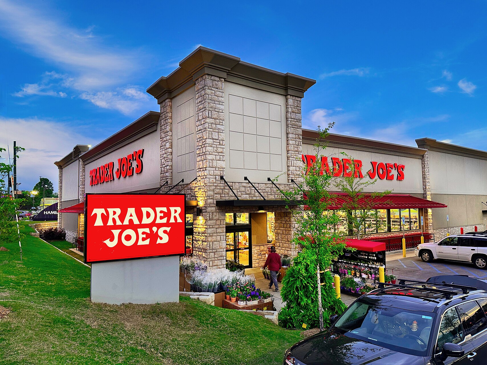

Trader Joe’s — американская частная сеть супермаркетов, штаб-квартира которой находится в Монровии (штат Калифорния, США). По состоянию на 22 апреля 2015 года сеть насчитывала 457 магазинов, примерно половина из которых были расположены в Калифорнии. Магазины Trader Joe’s также расположены в 40 других штатах США и в округе Колумбия.
